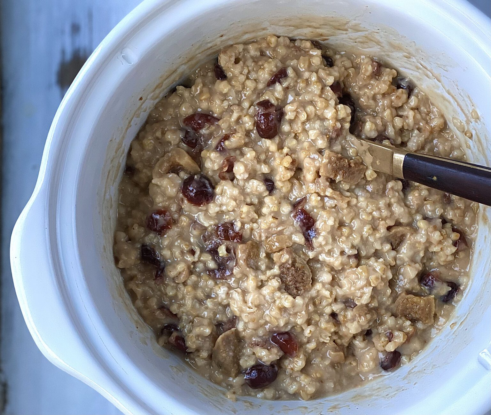

Overnight Oats

What is It???
This is oatmeal, but for people who have better things to do than standing around cooking oatmeal every morning.
Ingredients
- 1 cup steel-cut oats
- 1 cup dried cranberries
- 1/2 cup dried figs or dates (remove the pits)
- 4 cups water
- 1/2 cup heavy cream
- pinch kosher salt
Instructions
- Combine the oats, cranberries, figs, water, and cream in a slow cooker and set to low heat. Cover and cook for 8 to 9 hours.
- Stir, season with salt, to taste, and remove to serving bowls. This method works best if started before you go to bed. This way, your oatmeal will be finished by morning.